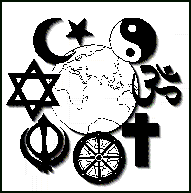

Término en Wikipedia
Término en Wikipedia
 El concepto de religión tiene su origen en el término latino religĭo y se refiere al credo y a los conocimientos dogmáticos sobre una entidad divina. La religión implica un vínculo entre el hombre y Dios o los dioses; de acuerdo a sus creencias, la persona regirá su comportamiento según una cierta moral e incurrirá en determinados ritos (como el rezo, las procesiones, etc.).
Por ejemplo: “La religión es el motor de mi vida y aquello que me sostiene en los malos momentos”, “Soy de los que piensan que la religión no debe mezclarse con el Estado”, “Si tienes problemas, busca refugio en la religión”.
Tal es la influencia que la religión, independientemente del tipo que sea, ha ejercido en el ser humano a lo largo de los siglos que ello ha traído consigo un amplio número de situaciones y de opiniones que indudablemente a nadie han logrado dejar indiferente.
Así, por ejemplo, han existido figuras históricas de gran relevancia como puede ser el caso del filósofo Karl Marx que no dudó ni un solo instante en criticar a la mencionada doctrina o conjunto de creencias. En su caso más concreto la definió como el opio del pueblo pues consideraba que la citada religión lo que hacía era adormecer la razón de los ciudadanos, era manipularlos para dejar que sus ideas y el raciocinio quedaran aletargados y así no pudieran rebelarse ante las injusticias a las que se veían sometidos o a los opresores que les coartaban en todo momento.
De la misma forma, como subrayamos anteriormente a lo largo de la existencia de la humanidad muchas son las guerras y conflictos bélicos de diversa tipología que se han sustentado en la religión para llevarse a cabo. Entre los mismos destacarían, por ejemplo, la Guerra Santa Musulmana, la Reconquista en España o las Cruzadas.
Estas últimas en concreto fueron un conjunto de campañas de tipo militar que se desarrollaron entre el siglo XI y XIII y que tenían como objetivo el que los ejércitos cristianos consiguieran el absoluto control de la Tierra Santa que se encuentra en Jerusalén. Entre aquellos destacan, sin ninguna duda, los que hoy se conocen como Templarios.
De acuerdo a su manera de entender y aceptar a la divinidad, existen distintos tipos de religiones. Las monoteístas son aquellas que se basan en la presencia de un único Dios, creador de todas las cosas (como el cristianismo, el judaísmo y el islamismo). Las politeístas, en cambio, sostienen que existen distintos dioses, los cuales pueden situarse en un cierto orden jerárquico (como el hinduismo o las religiones egipcias y romanas de la Antigüedad). También puede hablarse de las religiones panteístas que afirman que el creador y los objetos creados forman una misma entidad (como el taoísmo) y de las religiones no-teístas que no creen en divinidades de poder ilimitado o universal (como el budismo).
Otra clasificación de las religiones surge de acuerdo a su revelación. Las religiones reveladas se basan en la presunta revelación hecha por un ente sobrenatural, que ordena en qué tienen que creer los fieles, cuáles son las reglas que deben respetar y qué rituales tienen que llevar a cabo para rendir tributo.Las religiones místicas, por su parte, pueden entenderse como una filosofía de vida y no como un sistema rígido de preceptos y creencias, mientras que las religiones naturistas tampoco definen un sistema de creencias, pero reconocen la existencia de divinidades y de entes espirituales en la naturaleza que se manifiesta en el mundo físico.